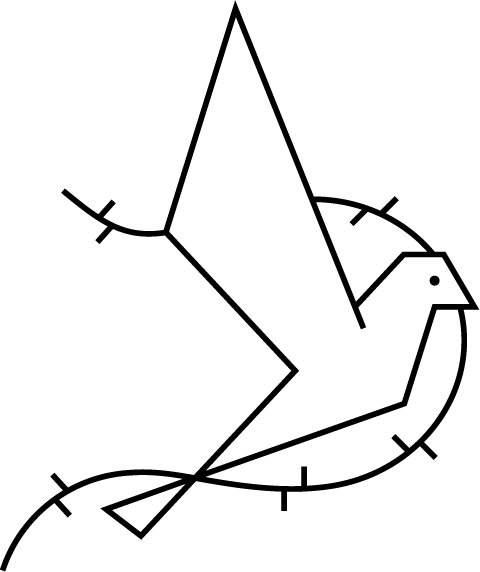
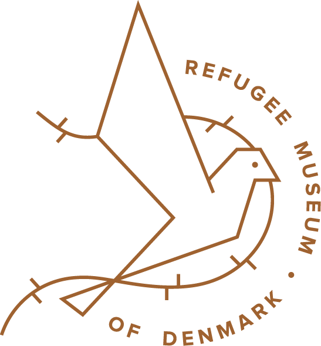
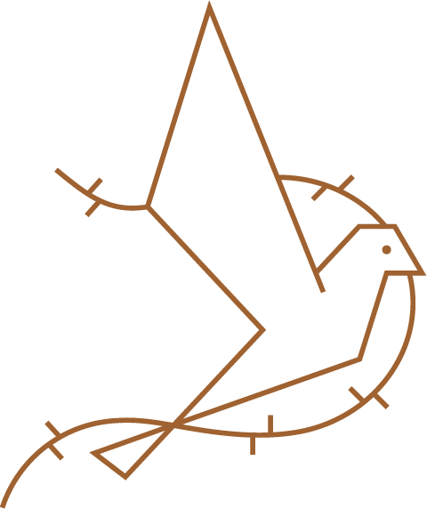

#D1404B
#1B768B
#3C9073
#000000
#b86427
#f4f3f4
Med tekst
Uden tekst
Med tekst
Uden tekst
Uden tekst
Uden tekst
Alpha Slap One
Alpha Slap One er blevet valgt for dens føder og tunge skrift.
Denne font må kun bruges i overskrift, da længere tekster af denne font, kan være svære at læse.
Lato
Lato er blevet valgt da den er let læselig.
Lato har ikke føder og dette gør det nemt at differencere overskrift og brødtekst, da der er god kontrast.
Til navigation
Navigationsknappen skal placeres i højre side. Den skal skabe en nem navigation rundt på siden. Derudover gennem JavaScript, er der skabt en funktion, der gør navigation nemmere, ved hjælp af opacity signaler.
Visuelt
Sproget
Da dette museum omhandler et meget barskt emne, vil tonen gennem museet være formel, for at reflektere museet og historiens seriøsitet. Dette er også kutymen på andre museer omhandlende 2.verdenskrig.
Sproget
Bla. på http://besaettelses
museumfyn.dk/omraadets
historie/.
Fortællingerne skal være informerende for at gøre kommunikationen klar for alle. Sproget er på nuværende tidspunkt dansk, men målet er at appen også skal fungere på både tysk og engelsk.
Billede navigation
Ikoner bruges til at navigere i JavaScript funktionen på konceptsiden.
Knap
Knap
Mønster
Mønsteret bruges i venstre side og i hele bunden.